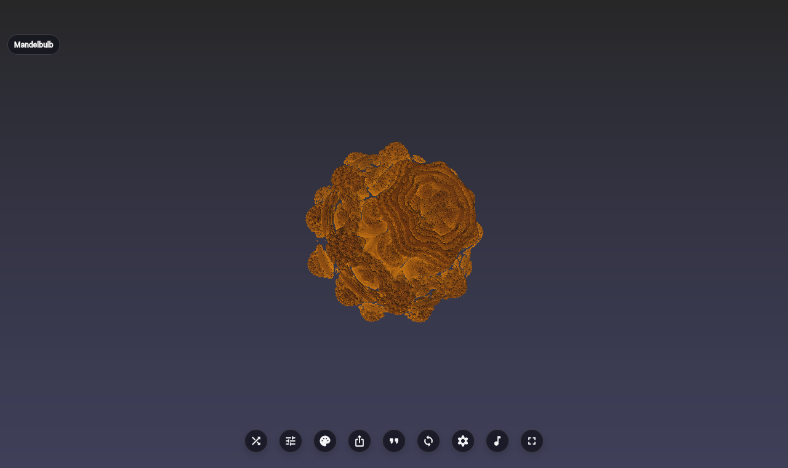
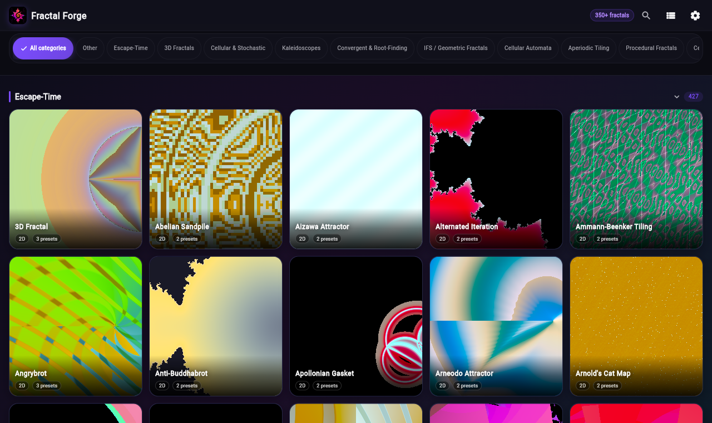

{kind=link}
Broad fractal catalog
Mandelbrot and Julia families, Newton basins, tilings, IFS, strange attractors, and 3D raymarched systems.
Fractal Forge is an open-source Flutter fractal explorer for hundreds of Mandelbrot, Julia, Newton, tiling, IFS, strange-attractor, and 3D systems. The installable app is primary today; this page prepares the browser preview for public testing.

These captures come from the local Chrome web smoke test. Replace or supplement them with polished store/social images and a longer video before the bigger Reddit launch.

Mandelbrot and Julia families, Newton basins, tilings, IFS, strange attractors, and 3D raymarched systems.
Flutter fragment shaders drive the interactive viewer; backend health policy falls back when needed.
MIT licensed, contribution-friendly, and looking for feedback on thumbnails, presets, shader polish, and web QA.
Add the Play Store, GitHub Releases, or package URL here once it is verified. Until then, the source repository and local build steps are the canonical install path.
The current automated proof used headless Chromium, which may report software WebGL/SwiftShader warnings.
If a fractal fails, looks wrong, or performs badly, please include browser, OS, GPU, and the fractal name in the report.